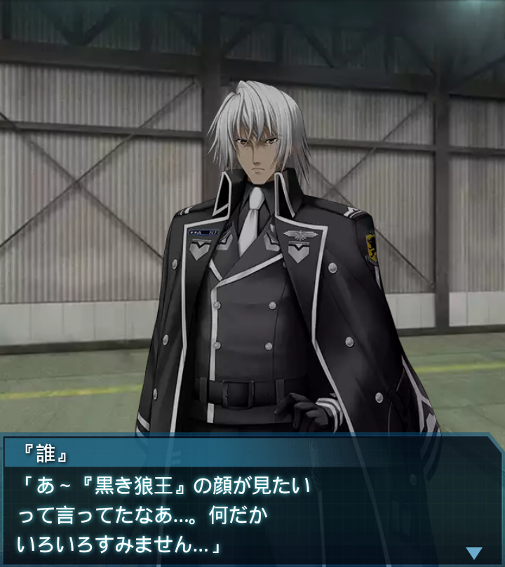
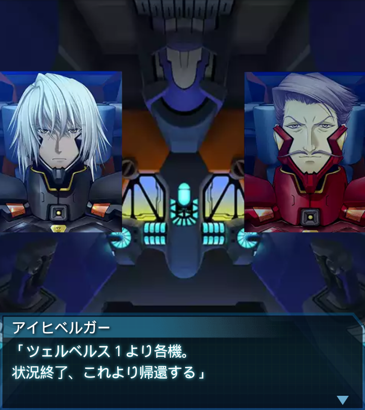

コンゴ・ヌワンム＝ディトゥ基地1
アイヒベルガー
「――当ムワンヌ=ディトゥ基地の
出撃は明朝０６００時。ハイヴ戦に
備え、各自休息を取っておけ」
アイヒベルガー
「『誰』大尉、貴官らの協力
に感謝する。思う存分、我々に
貸しを作って行くがいい」
『誰』
「し、少佐…。自分と香月司令の
通信内容を何故…」
アイヒベルガー
「貴官の通信終了後、香月司令より
改めて俺宛に通信が入り言われた。
顔が見たかったんだそうだ」

『誰』
「あ～『黒き狼王』の顔が見たい
って言ってたなあ…。何だか
いろいろすみません…」
アイヒベルガー
「一向に構わん。コンゴハイヴを
落とせるのなら、気が済むまで
付き合ってやる」
アイヒベルガー
「しかし、崔中尉の傷は思いの外
重かったな。作戦への不参加は
残念な事だ」
『誰』
「ですがその分は我々が補います。
数々のご恩には、貸しを作る事で
お応えします」
アイヒベルガー
「フッ、貸しと言えるだけの価値
ある戦いを見せようと言う事か。
期待している――ん！警報！？」
『誰』
「わかってはいましたが、そうそう
都合良く休息を取らせては
もらえないようですね」
アイヒベルガー
「それが前線に立つ者の宿命だ。
ついてこい、『誰』大尉。
ツェルベルス、出るぞ！」
『誰』
「さすがはツェルベルス大隊と
言ったところか。各隊との連携は
芸術性さえ感じるぞ…」
ララーシュタイン
「その連携に一朝一夕で合わせた
貴官らも流石である！明日のハイヴ
突入がまこと楽しみであるな！」
『誰』
「はっ！ありがとうございます、
ララーシュタイン大尉！大尉の
指揮下に入れた事、光栄です！」
アイヒベルガー
「第２中隊は、北アフリカ戦線に
第３小隊を残して来ざるを得ず、
戦力の低下に正直苦慮していた」
アイヒベルガー
「それを補って余り有る増強だ。
ハイヴ突入の先兵として心強い。
存分に腕を振るえ」
『誰』
「はっ！
元よりその所存です！」

アイヒベルガー
「ツェルベルス１より各機。
状況終了、これより帰還する」
アイヒベルガー
「帰還後は明日に備え休息を取って
おけ」
『誰』
「「「――了解！」」」